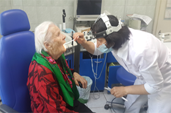

ПОЛИКЛИНИКА №1
ПОЛИКЛИНИКА №2
ПОЛИКЛИНИКА №3
Поликлиника проф.
осмотров
Новости
15.01.2016
Можно и без очереди
Как известно, в сентябре во всех медицинских организациях Югры проходят мероприятия, посвященные месячнику «Маленькое сердце – большая ответственность». В Нижневартовской городской поликлинике 6 сентября вновь распахнул свои двери мобильный центр здоровья для
15.01.2016
Краски осени
Как известно, в сентябре во всех медицинских организациях Югры проходят мероприятия, посвященные месячнику «Маленькое сердце – большая ответственность». В Нижневартовской городской поликлинике 6 сентября вновь распахнул свои двери мобильный центр здоровья для

15.01.2016
Можно и без очереди
Как известно, в сентябре во всех медицинских организациях Югры проходят мероприятия, посвященные месячнику «Маленькое сердце – большая ответственность». В Нижневартовской городской поликлинике 6 сентября вновь распахнул свои двери мобильный центр здоровья для
15.01.2016
Легче предупредить, чем лечить
Как известно, в сентябре во всех медицинских организациях Югры проходят мероприятия, посвященные месячнику «Маленькое сердце – большая ответственность». В Нижневартовской городской поликлинике 6 сентября вновь распахнул свои двери мобильный центр здоровья для